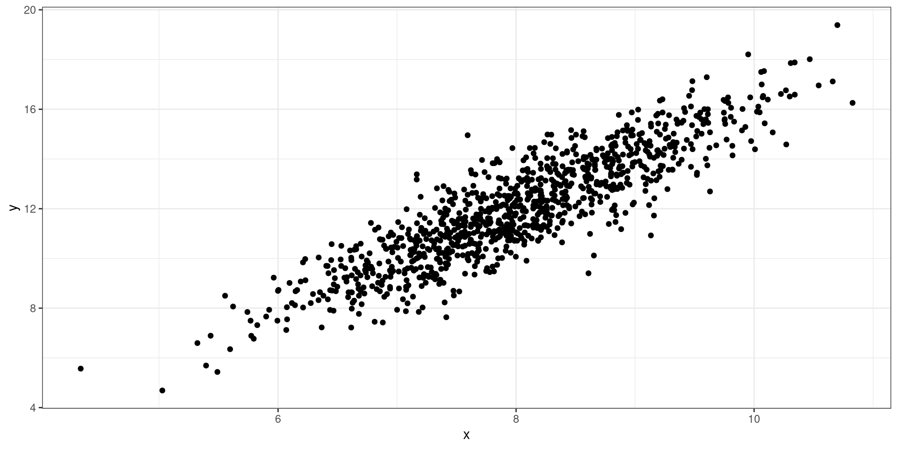
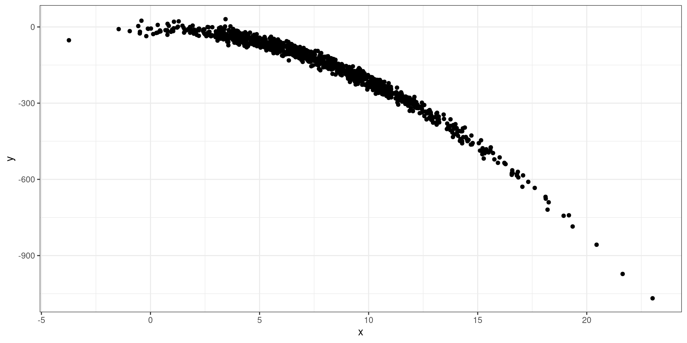
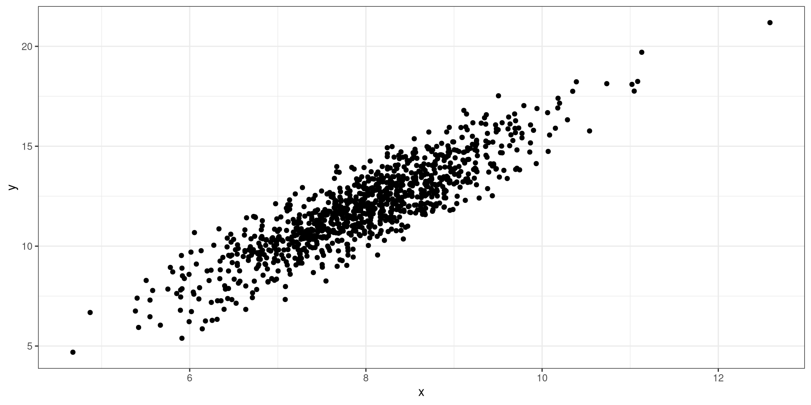

Linear Regression
Learning Objectives
OLS Estimator
Matrix Formulation
Multiple Linear Regression
Model Assumptions
Ordinary Least Squares
Ordinary Least Squares
For a data pair \((X_i,Y_i)_{i=1}^n\), the ordinary least squares estimator will find the estimates of \(\hat\beta_0\) and \(\hat\beta_1\) that minimize the following function:
\[ \sum^n_{i=1}\{y_i-(\beta_0+\beta_1x_i)\}^2 \]
Estimating \(\beta\)’s
Estimating \(\beta_1\)
Estimating \(\beta_0\)
Estimates
\[ \hat\beta_0 = \bar y - \hat\beta_1\bar x \] \[ \hat\beta_1 = \frac{\sum^n_{i=1}(y_i-\bar y)(x_i-\bar x)}{\sum^n_{i=1}(x_i-\bar x)^2} \] \[ \hat\sigma^2 = \frac{1}{n-2}\sum^n_{i=1}(y_i-\hat y_i)^2 \]
Matrix Formulation
Matrix Version of Model
\[ Y_i = \boldsymbol X_i^\mathrm T \boldsymbol \beta + \epsilon_i \]
\(Y_i\): Outcome Variable
\(\boldsymbol X_i=(1, X_i)^\mathrm T\): Predictors
\(\boldsymbol \beta = (\beta_0, \beta_1)^\mathrm T\): Coefficients
\(\epsilon_i\): error term
Data Matrix Formulation
For \(n\) data points
\[ \boldsymbol Y = \boldsymbol X^\mathrm T\boldsymbol \beta + \boldsymbol \epsilon \]
\(\boldsymbol Y = (Y_1, \cdots, Y_n)^\mathrm T\): Outcome Variable
\(\boldsymbol X=(\boldsymbol X_1, \cdots, \boldsymbol X_n)^\mathrm T\): Predictors
\(\boldsymbol \beta = (\beta_0, \beta_1)^\mathrm T\): Coefficients
\(\boldsymbol \epsilon = (\epsilon_1, \cdots, \epsilon_n)^\mathrm T\): Error terms
Least Squares Formula
\[ (Y - \boldsymbol X ^\mathrm T\boldsymbol \beta)^\mathrm T(Y - \boldsymbol X ^\mathrm T\boldsymbol \beta) \]
Estimates
\[ \hat{\boldsymbol \beta} = (\boldsymbol X ^\mathrm T\boldsymbol X)^{-1}\boldsymbol X ^\mathrm T\boldsymbol Y \]
Multiple Linear Regression
MLR
Multivariable linear regression models are used when more than one explanatory variable is used to explain the outcome of interest.
Continuous Variable
To fit an additional continuous random variable to the model, we will only need to add it to the model:
\[ Y = \beta_0 +\beta_1 X_1 + \beta_2 X_2 \]
Categorical Variable
A categorical variable can be included in a model, but a reference category must be specified.
Fitting a model with categorical variables
To fit a model with categorical variables, we must utilize dummy (binary) variables that indicate which category is being referenced. We use \(C-1\) dummy variables where \(C\) indicates the number of categories. When coded correctly, each category will be represented by a combination of dummy variables.
Example
If we have 4 categories, we will need 3 dummy variables:
| Cat 1 | Cat 2 | Cat 3 | Cat 4 | |
|---|---|---|---|---|
| Dummy 1 | 1 | 0 | 0 | 0 |
| Dummy 2 | 0 | 1 | 0 | 0 |
| Dummy 3 | 0 | 0 | 1 | 0 |
Which one is the reference category?
Matrix Notation
\[ Y = \boldsymbol \beta^T\boldsymbol X \]
\(\boldsymbol \beta\): a column vector of regression coefficients
\(\boldsymbol X\): a column vector of predictor variables
Model Assumptions
Model
\[ Y = \boldsymbol \beta^T\boldsymbol X \]
- \(\epsilon \sim N(0,\sigma^2)\)
Model Scatter Plot

Model Assumptions
Errors are normally distributed
Constant Variance
Linearity
Independence
No outliers
Errors Normally Distributed
Constant Variance
Linearity
Linearity
No Outliers
Residual Analysis
A residual analysis is used to assess the validity of the assumptions.